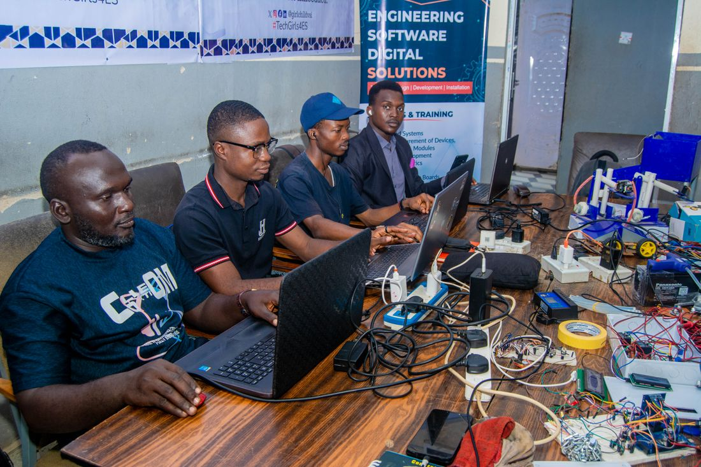
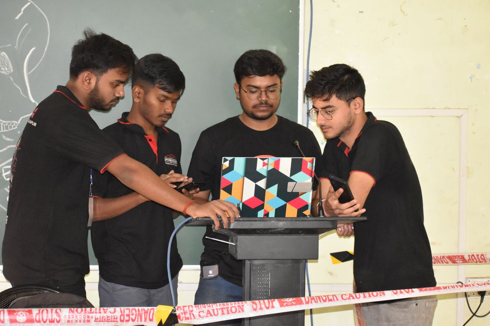

ScoreStream replaces paper score sheets at hackathons and project expos. Judges rate teams with stars from any device, the leaderboard re-ranks the moment a score lands, and AI turns every comment into clear feedback.
This board is connected to the live demo event. Every time a judge submits a rating, MongoDB recalculates the ranking and pushes it here instantly. No refresh needed.
No spreadsheets, no adding up marks by hand, no waiting for results.
The admin creates an event, defines a weighted rubric, and adds teams and judges. Everyone gets a private access code.
Judges log in, rate each criterion with stars and leave a comment. The weighted total out of 10 is calculated automatically.
MongoDB notices every new score and re-ranks the teams. Every open leaderboard updates in under a second.
When the event closes, AI reads all judge comments for each team and writes a summary, strengths and improvements.
Each role has its own login and sees exactly what it needs, nothing more.

The organiser sets everything up and stays in control from the first score to the final results.
Judges watch the pitch, tap the stars for each criterion and add a comment. The maths is done for them.

Teams get their own login to follow their rank live and read their feedback after the event.
Judges write quick notes. When the event closes, an AI model reads all of a team's comments together and writes structured feedback.
The team showed excellent real-world impact with a clear, confident pitch and a strong data story.
The rules, the maths and the live updates all live in the database itself.
$jsonSchemaEvery collection has a schema validator, so the database rejects badly shaped data.
unique indexA unique index on event, team and judge makes double scoring impossible.
$setWindowFieldsAn aggregation pipeline averages scores, joins team names, ranks teams and saves the result with $merge.
watch()MongoDB pushes every new score to the server the moment it is written. No polling.
text/event-streamServer-Sent Events carry each new ranking to every open screen instantly.
explain()Indexes turn full collection scans into index scans that read only what is needed.
Set it up in minutes. Judges, teams and the audience all get what they need in real time.